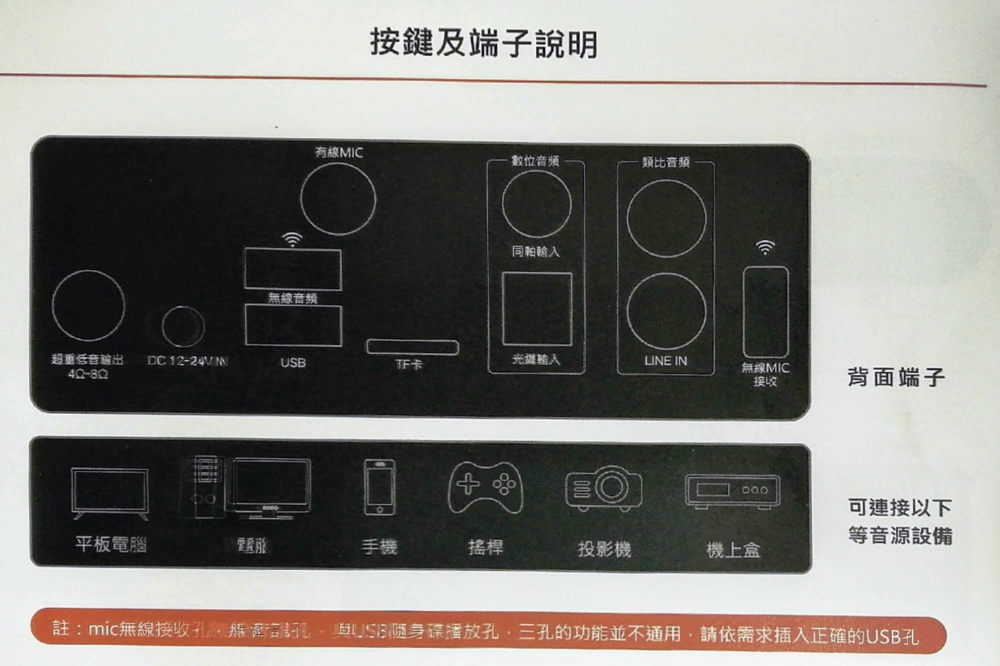
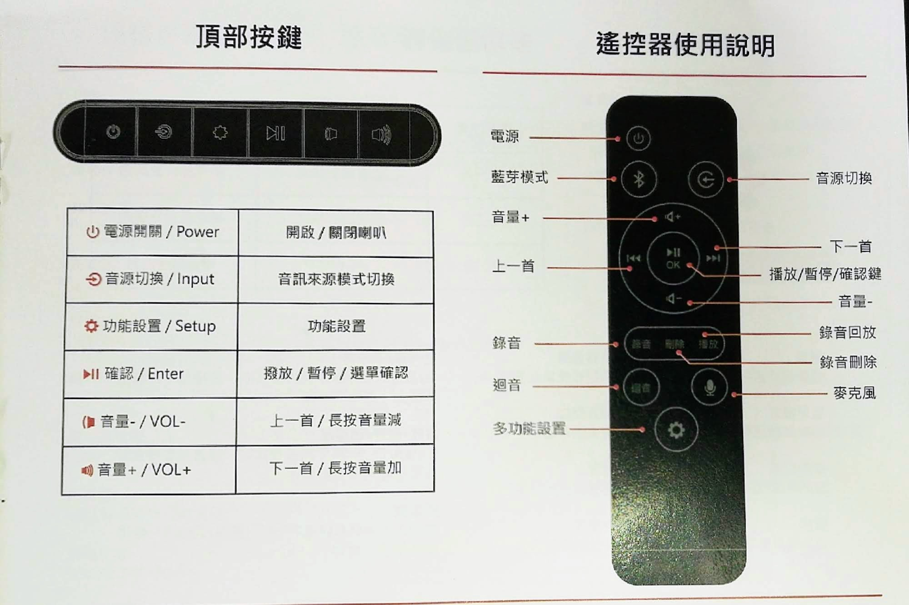

家庭影音設備
電視指南
有線電視 Cable TV
台灣的有線電視常被俗稱為「第四台」，由來是在早期只有無線電視三台（台視、中視、華視），因此有線電視就被稱為「第四台」。《有線廣播電視法》在1993年7月施行後，才在1994年正式開放有線電視系統業者登記立案。在此之後，有線電視頻道如雨後春筍般出現，到目前為止有100多個頻道。目前臺灣有線電視系統業者主要有「中嘉」、「凱擘」、「台固媒體」、「台灣寬頻」、「台灣數位光訊」等有線電視集團。
有線電視的功能簡單，只有廣播形式的電視頻道可以看。除了播放速度慢及畫質不佳外， 還是有許多頻道要「另外」付費，電視內容不夠豐富，跟隨選電視盒相比，已經屬於被淘汰的電視系統。
國內有線電視收視費一般標準是每月480～600元，一年就要5,760～7,200元上下。
電視盒 Set-Top Box, / 隨選電視 Video on Demand, VOD
數位机上盒，是2012年开始兴起的一种电视互联网终端設備，也被称作互联网播放机、媒體播放机、电视盒、網路机顶盒等，亦常被简称作“電視盒”。该设备的操作系统通常基于tvOS或Android或Linux，藉由通过Wifi无线网络或以太网等實體線路与互联网進行连接。在连接互联网之後，可以实现在传统的电视上在线点播、在线电视直播、浏览网页、收看海外電視與电影、甚至是玩游戏。電視盒可以隨選視訊 Vido on Demand, VOD 形式播放影音節目。中華電信的 Multimedia on Demand, MOD 亦屬於網路電視系統, 能觀看內建的MOD頻道，另有附加功能（如遊戲、劇院功能）均需分別付費。
電視盒的版本
純淨版：2019年5月3號開始實施的著作權法「第87條、第93條條文」修正草案通過後，銷售機上盒設備不得『內建、預設』供民眾安裝使用。或『指導、協助』民眾安裝App影視程式。 及明知銷售的機上盒可供民眾連結侵權內容而仍繼續販售，也會觸法。但已購買機上盒的民眾自行下載影視程式觀看並不會觸法。
簡單的說就是業者在販售機上盒時，不得『內建、預設』App影視程式 也就是純淨版，民眾購買後只能自行下載安裝使用，業者也不能『指導、協助』安裝App影視程式，違法的業者一但被查獲，將處以2年以下有期徒刑之刑事責任，或併科最高新臺幣50萬元以下罰金。
越獄版： 所謂的已越獄，並不是破解影視程式中的VIP功能，而指的是VPN(突破網路封鎖)，俗稱翻牆或越獄。在電視盒中可先安裝 越獄或穿梭 程式就能不受所在地區的限制，觀賞其他地區免付費網路影音。
整體來說，目前買到的純淨越獄版電視盒，需要自行安裝相關軟件可自由欣賞網路上海量影音。或經由翻牆享受其他地區同等級的免費資訊。但所有安裝第三方軟件需要自行安裝，供應商是不能提供任何協助或安裝資訊。但不用擔心，安裝上仍是人人易做，如非營業目的在自家私下觀賞就不會觸法。
電視盒的評比
- 3C產品Youtuber推薦10款愛用電視盒
- 2020 十大電視盒人氣推薦款
- 宅在家必備！2020 數位機上盒推薦，追劇、玩遊戲、看電影一手包辦
- Youtube: 2020/06/25揭密! 電視盒看第四台 / 各廠牌電視盒如何挑選 / 電視盒入門 / 小米 大通 OVO 雷爵 便當 彩虹奇機 NVIDIA SHIELD / 安博 易播 夢想 普視 TVPAY 歡樂 【TVBOX】
- 2019/08/07電視盒要怎麼買？三台主流電視盒大PK！小米盒子、Apple TV、安博盒子
安博盒子 UBOX8 第八代
系統特性：- 採用Allwinner H616 6K 多媒體 CPU, 比前一代性能高出百分之三十，功耗降低百分之二十，溫度下降百分之三十。
- 4G 內存DDR3 RAM, +64G 閃存eMMC
- 4K高清HDR 畫質，支持高清 6K 30fps 硬體解碼，採用新一代SmartColor 3.3 畫質引擎。
- AI 智能語音系統，採用Google 智慧語音
- 採用 最新Android 10.0 系統，搭載智能AI語音
- 全球CDN節點加速，為全球不同用戶搭載不同CDN 節點
- 官網價格：$4,580
易播 5MAX 機皇
系統特性：- H6 4核 ARM Cortex-A53 64bit CPU + Mali-T720MP2 GPU
- 4G DDR3 RAM + 64G eMMC Flash
- 最高支援6K 分辨率畫質
- AI 智能語音
- 官網價格： $4,380
產品匯總：電視盒 TVBox, 聲霸音響 SounderBar
選擇類別
注意：點擊下面圖片,進入廠商網站
{{ post.Brand }} - {{post.Model }}
伴唱歌單
使用 手機 Youtube 伴唱
伴唱曲目瀏覽 使用Youtube 個人播放清單的步驟：- 打開手機上Youtube App, 點選頭像(帳戶） / 您的頻道 / 播放清單 的製作
- 在Youtube 搜尋工具中，搜尋歌曲名稱或歌手。但儘量加上 “KTV", “伴唱”，“伴奏”，或“純音樂”等關鍵字。確認找到的曲目含有歌詞字幕。
- Youtube 上曲目包含雙聲道歌曲可完全將原唱完全去除，如為單聲道/MTV 曲目則只能抑制原唱的音量，無法完全去除原唱者的聲音。
- 將找到的區目儲存，儲存可依據資料夾分類儲存。
- 在播放時，只要在 頭像(帳戶） / 您的頻道 / 播放清單 就能找出個人伴唱收集。
使用 安博盒子 K歌之王 伴唱
K歌之王點歌方法- 可依據下面模式點歌
- 熱門推薦：由系統產生推薦曲目
- 拼音點歌：可依據語音辨識，歌曲或歌手的手字母, 及數字查詢。譬如 對不起 輸入DB
- 歌手點歌：依據分類歌手進行點歌
- 分類點歌：依據國別地區分類
卡拉OK
RockTek 雷爵 KTV 家庭劇院
裝備- RT-SB02 聲霸卡拉OK組合: 頂部左右兩側 3吋的高彈性中低音、卸下前面板，可以看到有六個喇叭，左、右兩側 2吋特製圓形高音單體，因此總共有八個發聲單體，讓人聲方位更精確，聲音圓潤自然且穩定。
- RT-SW02 重低音喇吧: 採用八吋紙盆振膜的單體，具有較平滑自然與反應快速的低頻特性，而木質音箱跟低音反射孔的設計有助於低頻的穩定跟下潛延伸性。
- MC01 無線麥克風: 利用 無線 UHF 接收器來接收聲音，在聲霸端使用USB插口。
使用說明書

組裝說明：

- RockTek 支援中心：硬體安裝說明
-
麥克風MC01 與 聲霸 SB02 配對方式：（注意說明書及上面網站方法1 都不能正確工作！，需要使用方法2.
- 請將SB02開機，並將麥克風接收器的 USB 拔除 。
- 快按麥克風 SET 鍵 3 次，麥克風出現 ID 閃爍，長按 SET 鍵，右上訊號符號會閃爍。
- 按住 SET 鍵不放，讓訊號符號維持閃爍，再插上麥克風接收器的 USB 後, 放開 SET 鍵，即可完成配對。
- 電視音源可用 光纖 與 聲霸 SB02 連接，或 藍芽 連接．
- 安博盒子中ｋ歌軟件包含：K歌之王（推薦）, 咪咕愛唱, 歡樂K歌。建議安裝 K歌之王
- 將電視音源 使用 光纖, 藍芽 或 傳統音源線連至 SB02 聲霸
- 將 無線麥克風 使用 UHF SUB 同樣連接至 SB02 聲霸，聲霸具備混音功能將 兩者同時輸出。
- 曲目播放時，按SB02 遙控器 向下，可調整 音源及麥克風 兩者的音量, 或點擊 多功能設置 按鍵, 能針對麥克風音量做調整。
- 按SB02 遙控器的向右兩次，就能跳至下一首 點歌。
- 將手機上YouTube 與電視上YouTube 連接：
教學影片
- 在電視上的YouTube: 設定 / 透過電視代碼連接 - 獲得12個數字的連接代碼
- 在手機上打開 YouTube App: 頭像帳號 / 設定 / 在電視上觀看 - 輸入電視連接代碼。就能完成手機與電視的連接
- 由手機上的YouTube 搜尋 KTV 相關曲目，點擊播放就能在電視上看到
| 使用模式 | EQ模式 | 高音 | 低音 |
|---|---|---|---|
| 音樂 | 流行模式 | +5 | -2 |
| 電影 | 流行模式 | +5 | 0 |
| 電視 | 流行模式 | +5 | -4 |
| 電玩 | 自然模式 | +5 | 0 |
| KTV | 自然模式 | +3 | -2 |